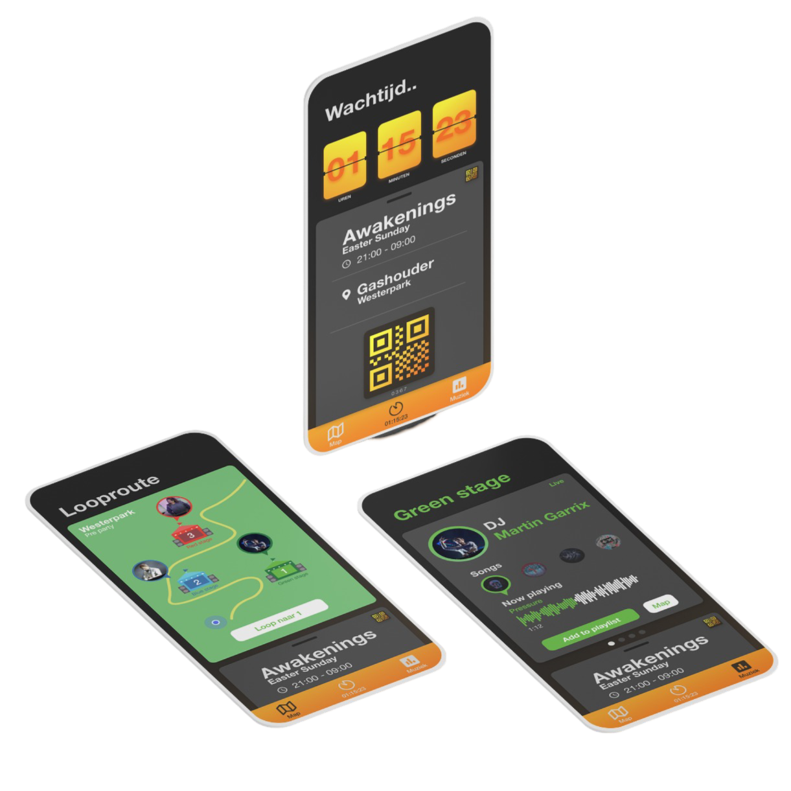

PROJECT ADExSOUNDCLOUD
Project case
ADE is a large music event with many visitors. Just before a big event, there are always long waiting lines, and the chances are higher that users become irritated or bored. ADE hopes to solve this problem in advance. In collaboration with SoundCloud, they aim to make the waiting lines more enjoyable and encourage users to create a SoundCloud account
Key goals:
Concept: Develop a complete concept to make waiting in line more enjoyable, while encouraging the creation of SoundCloud accounts.
My Concept:
My solution to this problem is to eliminate physical queues by using digital queues, where visitors can enjoy different music as they follow a set route.


Tools:
- Adobe XD
- Miro
Conclusion
I found it difficult to come up with a good idea to make the waiting line more enjoyable. You get to know different stakeholders and encounter many difficult or impossible challenges. And the fact that it didn’t have to be just a screen-based solution made it fun. I thought it was a successful and enjoyable assignment to experience.